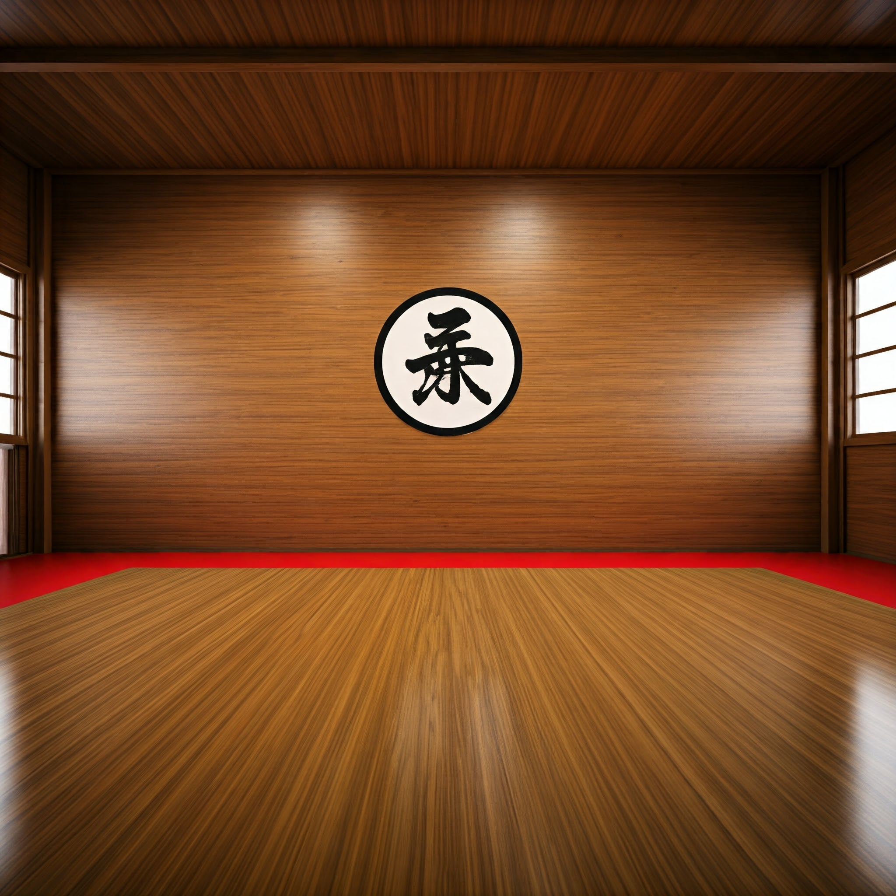
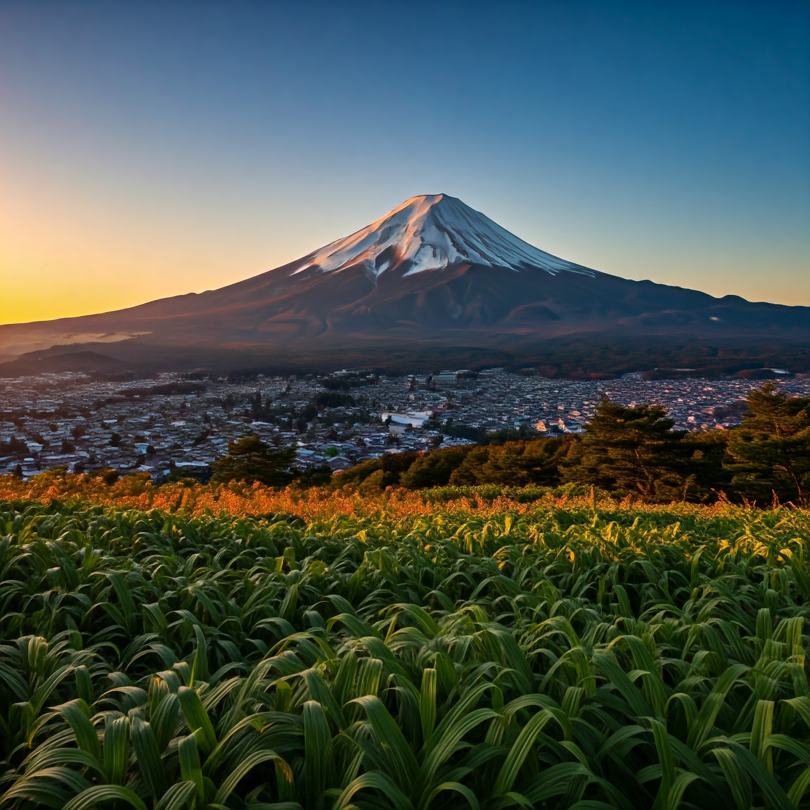

Shorinji Kempo is a Japanese martial art that was founded in 1947 by Doshin So. It is a type of Japanese kung fu that combines elements of both self-defense and spiritual development - a way of life. I have been lucky enough to find a small community in the town of Ome, Japan where I practice weekly. The transformation spirtutally and physical has been a wonderful expierence.
The philosophy of Shorinji Kempo emobodies the concept of being a good person. The core concept is to create people in society that focus on helping community and building themselves. There is a direct coorelation between kindness and community that triumps evil.
Shorinji Kempo techniques include a variety of strikes, kicks, throws, and submissions. It also emphasizes the use of meditation and breathing exercises to develop mental focus and control. It is always important to be aware of your surrounds when practicing. The core basics must be practiced daily
